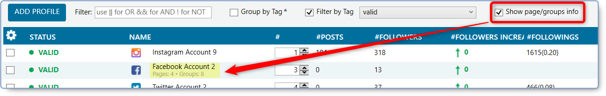

Search The JARVEE Knowledge Base
The Social Profiles page is where it all begins. This is where you go to add the accounts that you will be managing by clicking the Add Profile button.
As you can see, we currently support the following platforms: Facebook, Instagram, YouTube, Quora, Twitter, Pinterest, LinkedIn, Tumblr, Reddit, TikTok (Beta). You can also add Instagram Scraper Accounts if you have the Professional Plan license. All account types are treated almost the same, some will have extra features and tools that are specific to that account type, but most of the features are common.

Once you have added your accounts, it will be visible in the Social Profiles page. To make it easier, let us divide the SOCIAL PROFILES view to 3 main sections:
- Add the profiles, Filter, sort, and group the profiles
- Accounts
- Actions on added profiles

Add the profiles, Filter, sort, and group the profiles section:

1. Add Profile button:
To know more about this function, you can check out the following guides available on our knowledge base:
2. Filter:
You can use this option to quickly search for an account. Just type the keyword name of the account, the name of the platform, the status of the account and so on.
✅ To clear the selection, just click the X button on the Filter box.
✅ You can also, use logical operators including:
- AND: Symbol used &&
- OR: Symbol used ||
- NOT: Symbol used !
3. Group by Tag*:
When using the option “Filter by Tag”, only the accounts containing the specified tag will show up on the SOCIAL PROFILES view. It is useful when you need to only focus on some specific accounts.
4. Filter by Tag:
Check the ‘Filter by Tag’ option to show the list of tags you have in Jarvee.
5. Show page/groups info:
You may use this option if you want to see page/groups information of your accounts as shown in the image below.
6. Hide IG Scraper Accounts:
You may use this option if you want to hide the IG Scraper Accounts that you have added in Jarvee.
7. Show only IG Scraper Accounts:
If you will only be working on the IG Scraper Accounts, you can check this alternatively to only show the scrapers.
✅ The last two options are only available for the Instagram Scraper Accounts type, and not the scraper accounts added as a regular Instagram account.
Accounts section:

You can select which columns you want to display on the table, by clicking the “gear” icon located at the left of the Status column and this will launch a window where you can choose which columns you want to be visible on Social Profiles including the width for that particular column.
Another way to do this is by clicking the Manage Columns button at the bottom of the Social Profiles page.
Actions on added profiles:
- Here you will see several buttons that will come in handy when you want to execute the action on multiple accounts at once. You will see Select All and Select None, pretty much self-explanatory.
- You also have three other buttons: Actions On Selected Profiles, Manage Columns and View Statistics.
- On the left-most part, you will also see the number of selected profiles over the total number of profiles that you have in Jarvee.
I – ACTIONS ON SELECTED PROFILES button:
This special button is packed with a list of options that enables you to execute actions on selected accounts in bulk. It is separated into several categories:
1. Export
EXPORT API (IG) COOKIES: use this button if you want to export the API cookies of Instagram of your selected accounts.
EXPORT COOKIES: use this button to export cookies of your selected accounts.
EXPORT SELECTED PROFILES: Use this button if you want to export selected profiles.
EXPORT AS BINARY FILES: use this button if you want to export your profiles as a binary file.
EXPORT GROUPS LIST: use this button if you want to export the list of groups you have on your Facebook accounts.
EXPORT WITH COOKIES AS BINARY FILES: use this button if you want to export the selected accounts with cookies as binary files.
2. IMPORT:
IMPORT API (IG) COOKIES FOR MULTIPLE ACCOUNTS: use this button if you want to import API cookies for multiple Instagram accounts.
IMPORT COOKIES FOR MULTIPLE ACCOUNTS AND VERIFY: use this button if you want to import cookies of multiple accounts then verify if after that.
IMPORT COOKIES FOR MULTIPLE ACCOUNTS: use this button when you want to import cookies for multiple accounts.
IMPORT PROFILES FROM BINARY FILES: use this button when you want to import accounts from binary files.
📌 The option to Export and Import as Binary Files is used if you want to move accounts between Jarvee instances. When you do this, all account information including the settings, sources and results from Tools will be included in the exported file and will be available when you import to the other Jarvee instance.
3. INSTAGRAM ACTIONS:
BROWSE PROFILES: use this button when you want to open the selected Instagram accounts on the default browser.
CHANGE PASSWORDS USING API: this option will change the password with a randomly generated one for the selected account/s. Accounts should be in VALID status in order for this to work.
CHANGE TO EN IN THE EMBEDDED BROWSER: use this option to change the language of the Instagram account to English
CONFIRM ACCOUNT EMAIL: for this to work, you need the email and password to be entered on the Email Validation Tab.
EDIT PROFILES: use this button if you want to edit profiles of your Instagram accounts in bulk; you will get a CSV file where you can make the changes you want, once you do that, close the file, you should get a popup, click on yes if you want the changes you made to be applied and click no if you want to cancel.
EDIT WITH SPIN: use this option if you want to edit Instagram profiles with spin.
EMAIL VERIFY ACCOUNTS: use this when your account is showing Email Confirmation status. You need to set-up the Email Validation tab of the account to make this option work
EMAIL VERIFY USING THE EMBEDDED BROWSER: use this option when you have set up the Email Validation tab from social profiles details and want to automatically unblock the accounts by executing the email verification in the embedded browser (requesting a validation code and extracting it from the email account).
EXPORT API SCRAPE BLOCKS: this option will export a file that contains the API calls that are blocked by Instagram and the date until they are suspended.
EXPORT FOLLOWERS THAT UNFOLLOWED: use this button if you want to export the followers that unfollowed your account on a CSV file.
EXPORT MOST RECENT API ERROR CALLS: use this button if you want to see the API calls that failed recently.
EXPORT MOST RECENT SUCCESSFUL API CALLS: use this button if you want to see the successful API calls made.
EXPORT STATUS HISTORY: use that option to see when your accounts have received an email, phone verification, captcha, etc.
FIX CAPTCHA: use this button when you want to solve the captchas for the selected accounts, you need to have a valid DeathByCaptcha or 2captcha account with credits setup in SETTINGS > Connectivity tab for this to work.
FIX GET HELP SIGNING IN: this option is helpful in solving the ‘get help signing in’ verification for the selected accounts. Note that the Email Validation tab should be configured for this to work and that the account password will be changed after.
FIX TEMPORARILY LOCKED ACCOUNTS: use this option when you have set up the Email Validation tab from social profiles details and you want to automatically unblock accounts by requesting the security code and then using it to reset the password. Please note that using this option will change your account password.
LOGOUT FROM EMBEDDED BROWSER: use this option to logout the selected accounts from the embedded browser.
PHONE VERIFY ACCOUNTS: use this button if you want to phone verify the selected IG accounts.
📌 Jarvee supports some services that could help you automate the phone verification. You can navigate to the Settings > Connectivity tab then check the option “Instagram phone verification”.
To set Jarvee to phone verify your accounts automatically, use one of the services that Jarvee supports, then go to SETTINGS > Social Platform > Instagram tab > then check the option “Automatically phone verify accounts when needed”. It works only for Instagram accounts.
PHONE VERIFY WITH OWN NUMBERS: use this when you want to use your own phone numbers to phone the selected accounts.
RE-LOGIN ACCOUNTS: use this option if you want to logout then log back in using the API. The device ID will not be reset, as this emulates logging out and logging in on the same phone.
RE-LOGIN IN THE EMBEDDED BROWSER: use this option if you want to logout then log back in using the embedded browser.
REMOVE PHONE NUMBERS: use this button if you want the phone number from the profile of the selected accounts.
RESET API SCRAPE SUSPENSION BLOCKS: this will reset the API scrape suspension times on the selected profiles.
RESET DEVICE IDS: use this button if you want to reset device IDS of all selected accounts.
RESET PASSWORDS: use this button if you want to reset the passwords of the selected accounts.
RESET SCRAPE HISTORY: this will reset the scrape history on the selected accounts, the ones from follow/extracted users and like/extracted posts.
RESTORE ‘COMPROMISED ACCOUNT’ USING THE EMBEDDED BROWSER: this will change the password for the Instagram account and make the account VALID (old password is saved in Social Profiles > Notes)
REVIEW TERMS USING THE API: the account will be reviewed one after another, not in parallel.
REVIEW TERMS USING THE EMBEDDED BROWSER: use this when the account is showing Review Terms status; it will execute a Verify operation and have them process the data policy popup in the embedded browser.
STOP/START ALL TOOLS: when this button is used, for each selected account, if at least one tool is started then it will stop it so all tools will be stopped, otherwise, start all tools that were previously stopped using the same button.
4. FACEBOOK ACTIONS:
REMOVE PHONE NUMBERS: use this option to remove the phone numbers from your Facebook profile.
UPDATE PASSWORD: use this option if you want to update the password of your Facebook accounts.
5. GENERAL PROFILE ACTIONS:
BULK EDIT CUSTOM TOKENS: use this option when you want to edit custom tokens in bulk.
CLEAR COOKIES: use this option to clear cookies of the selected accounts
CLEAR PROFILE TAGS: use this option if you want to clear tags of the selected profiles.
CLONE PROFILES: use this option if you want to replicate the selected profile to a new profile
DELETE PROFILES: use this option if you want to delete selected profiles from Jarvee.
LOGIN IN THE EMBEDDED BROWSER: use this option if you want the selected accounts to login using the embedded browser.
MARK AS VALID: use this option if you want to mark all selected profiles as valid.
OPEN EMBEDDED BROWSER: click on this button to open the embedded browser of the selected accounts.
OPEN EMBEDDED BROWSER WITH LINK: use this option if you want to open the embedded browser of the selected accounts with a specific link, you will get a pop up where you can add the link then click on ok.
REMOVE PROXIES: use this button if you want to remove proxies from selected accounts.
SYNC PROFILES: use this option if you want to force a sync operation on all selected accounts.
TAG PROFILES: use this option if you want to add tags to the selected profiles.
TOGGLE STOP/START PROFILES: use this option to toggle stop/start the selected profiles.
VERIFY PROFILES: use the option if you want to verify the selected profiles.
VERIFY PROFILES AND CLEAR COOKIES: use this option to verify the selected profiles and clear their cookies.
VIEW STATISTICS: use this button if you want to see stats of the selected profiles.
6. DESTINATION LISTS:
CREATE DESTINATION LIST: use this option to create a destination list of the selected account.
CREATE DESTINATION LIST & SELECT ALL GROUPS: use this option to create a destination list of the selected account and select all the groups of the account.
CREATE DESTINATION LIST & SELECT ALL WALLS: use this option to create a destination list of the selected account and select the wall.
7. LOGIN TYPE:
Switch To Automatic Login
Switch To Manual Login
II – MANAGE COLUMNS button:
As mentioned earlier, you can use this button to select the columns that you want to appear on your Social Profiles page. You can also indicate the width of that column.
III – VIEW STATISTICS button:
It is the same as the option we saw on the general profile actions section of the ACTIONS ON SELECTED ACCOUNTS button. You can select the profiles you want, then click on the VIEW STATISTICS button and you will get a window showing the stats of the accounts you selected.
Sample display when only one account is selected:
Sample display when two or more accounts are selected (you can check the group data by account option for a cleaner view per account) :